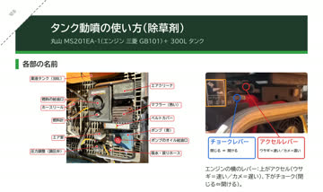
タンク動噴（除草剤）丸山 MS201EA-1 ＋ 300L タンク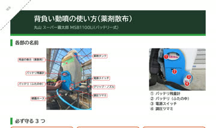
背負い動噴（薬剤散布）丸山 スーパー霧太郎 MSB1100Li（バッテリー）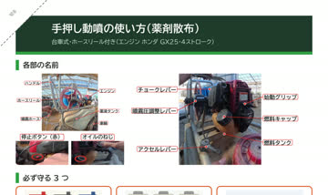
手押し動噴（薬剤散布）台車式・ホースリール付き（ホンダ GX25）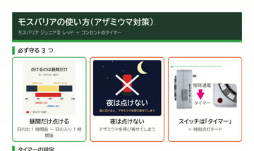
モスバリア（アザミウマ対策）ジュニアⅡ レッド ＋ コンセントのタイマー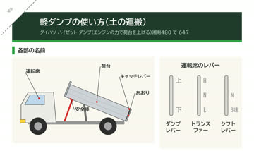
軽ダンプ（土の運搬）ダイハツ ハイゼット ダンプ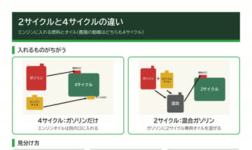
2サイクルと4サイクルの違いエンジンに入れる燃料とオイルタンク動噴（除草剤）
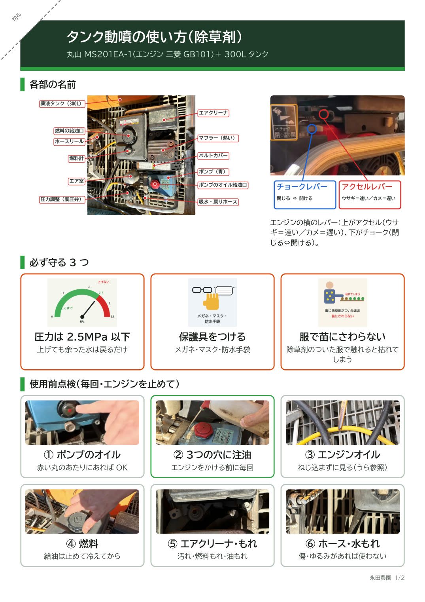
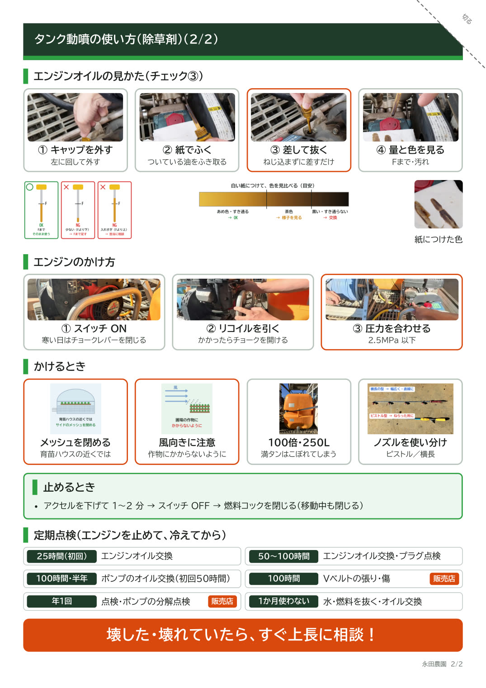
背負い動噴（薬剤散布）
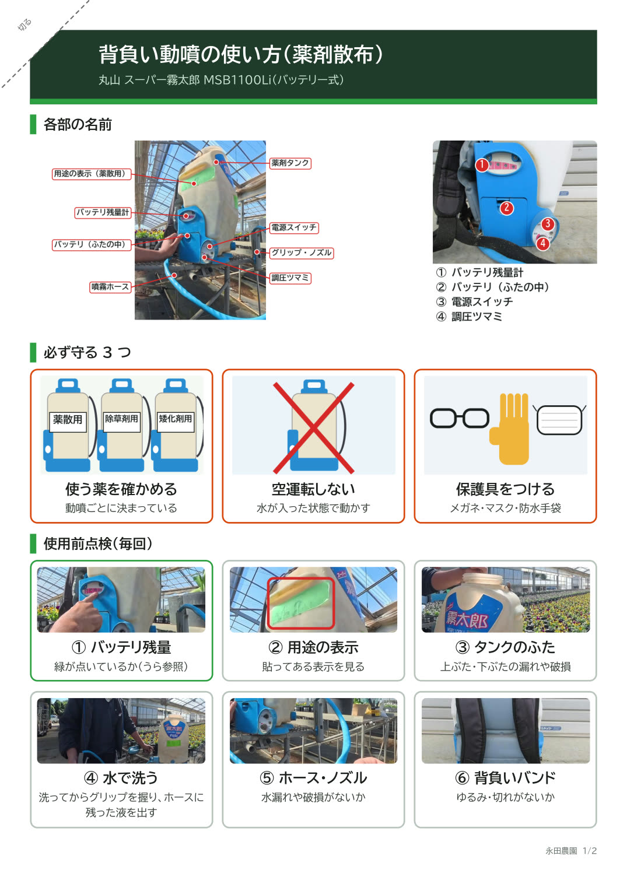
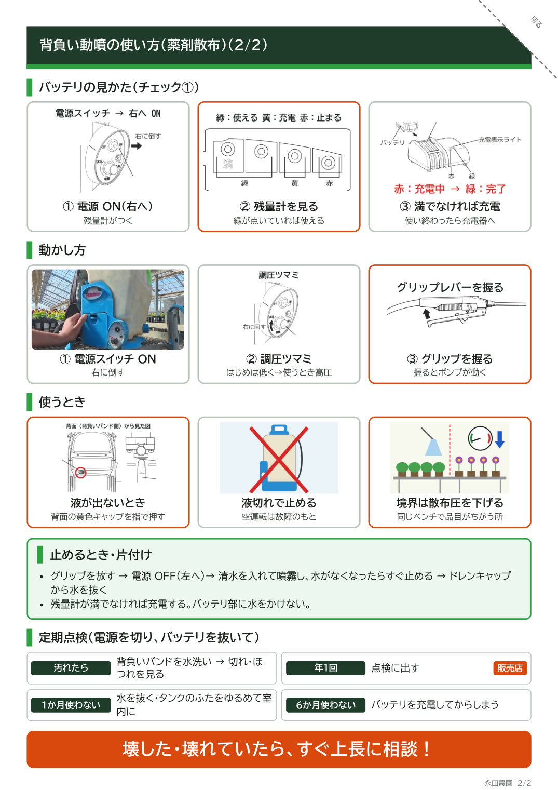
手押し動噴（薬剤散布）
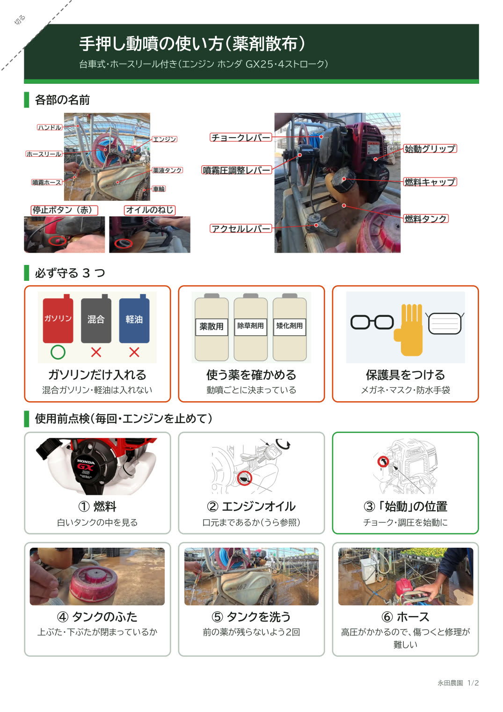
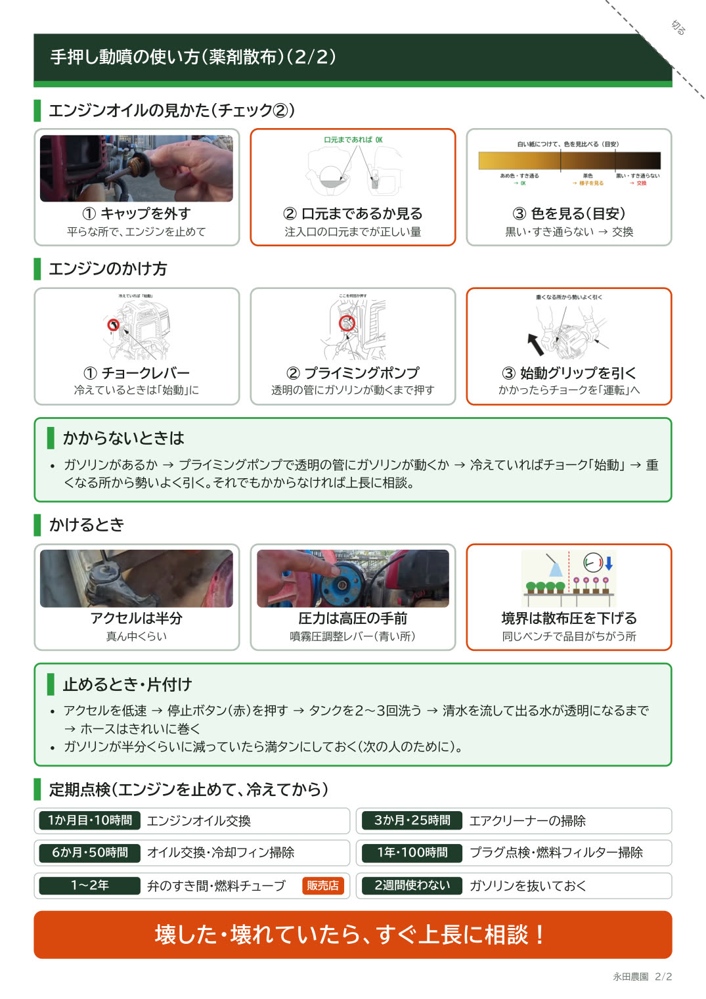
モスバリア（アザミウマ対策）
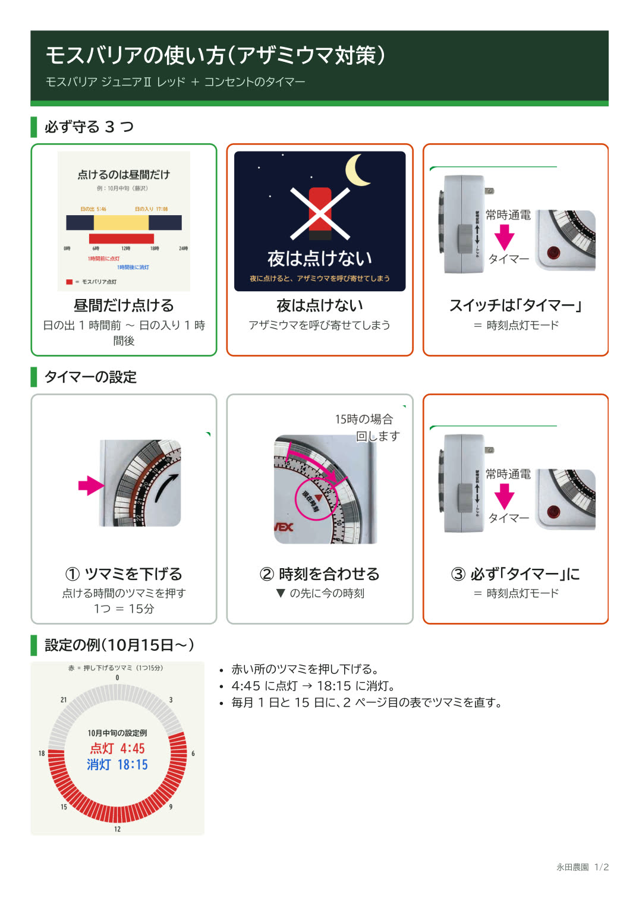
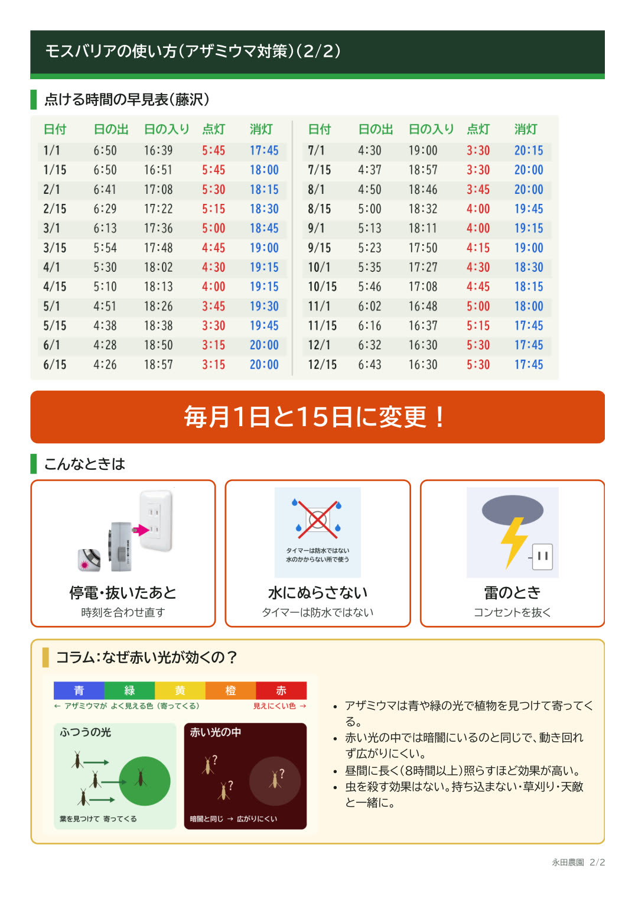
軽ダンプ（土の運搬）
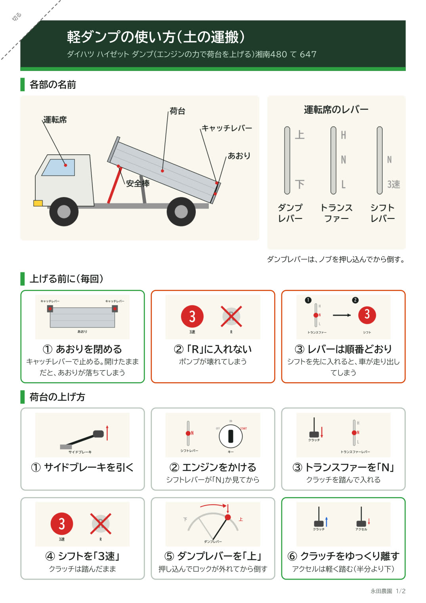
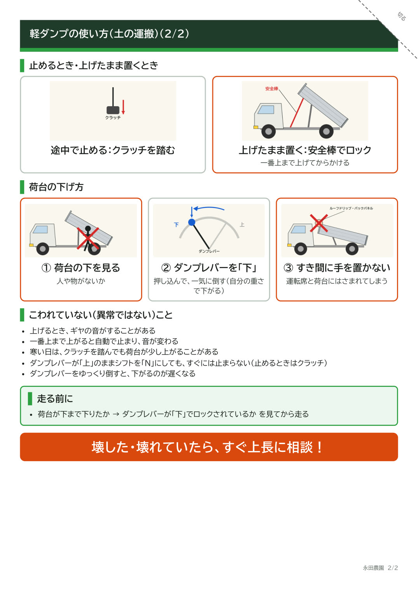
2サイクルと4サイクルの違い
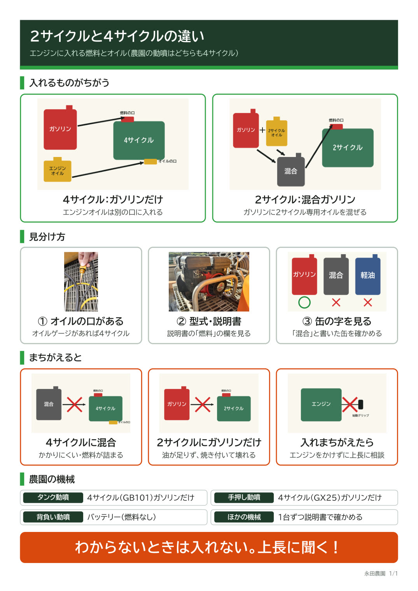
わからないときは使わない。上長に聞く。